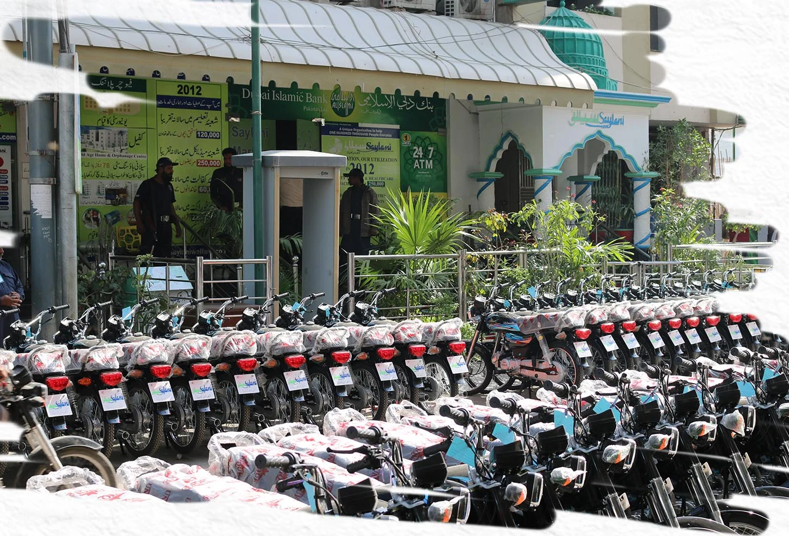

Saylani Welfare Trust is one of the largest NGO in Pakistan. Saylanüs mission is to support the underprivileged by providing essential services such as free food, ration distribution, medical assistance, clean water, and education, Our educational initiatives encompass schools, vocational training programs, and modern IT education. As an affiliate of Saylani Welfare International Trust in Pakistan, which has been dedicated to humanitarian service since 1999, we contribute significantly to the well-being of society, investing over a billion rupees monthly in various philanthropic endeavors.
Saylani Wolfaro International Trust has boon working for tho last 22 years to improve tho conditions of tho
loss privileged, helpless, and handicapped individuals. Tho organization is working day and night to mako
lifo happier, especially for tho middle class, lower middlo class and oven lower class. At time of
establishing tho organization, tho founder of Saylani Wolfaro Intornational Trust and a fow of his
associates had madc a commitrnont to servo tho distrossed pooplo living in Pakistan and abroad in all
stages of life. it is a blessing in disguise that today tho organization is serving humanity in moro than 63
areas of lifo without any discrimination-
Hazrat Allama Maulana Muhammad Bashir Farooq, a distinguished spiritual figure and Islamic scholar,
servos as tho guiding force, founder, and patron of this organization. Through his dedicated efforts, Saylani
Wolfaro International Trust has bocomo a global humanitarian entity, extending its service to humanity
worldwide.
Originating in a rontod house, tho organization has grown to oncompass ovor 630 branches globally,
accompanied by an equal number of Dastarkhwans, employing thousands. Prosontly, tho organization
allocates an monthly budget cxcooding a billion for humanitarian services. Encompassing moro than 63
focots of lifo from birth to death, including areas such as food, health, oducation, social welfare, cloan
water, marriage, mass I.T training vocational training, aid to Syrian and Burmese rofugoos, pilgrim
sorvicos, school foes, oasy loans, omploymont assistance, hairdressing, medical facilities, diagnostic
sorvicos, x-rays, ultrasounds, ECGs, consultant clinics, mobilo dining, mobilo clinics, mobilo air caro clinics,
and operation thoators, our organization is dodicatod to sorvirg humanity, ospocialty during natural
disasters.
Saylani Wolfaro reaches moro than 300,000 individuals daily, offering impactful services- Tho organization
provides vocational training across various disciplines, supports undorprivilogod families with housing,
covers school foes and annual oxponsos for children, aids in daughtorS facilitatos small-scalo
business through loans, and fosters omploymont opportunities with rickshaws, motorbikes, stalls, shop
delivery, fingor chips machines, sowing machines, and other essentials.